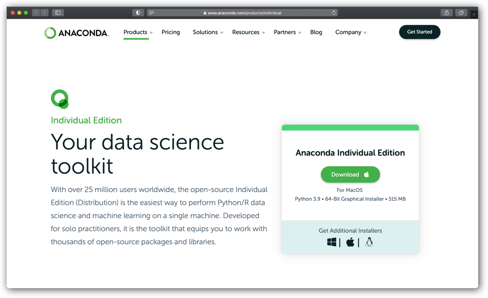

Installasjon av Python#
Vi anbefaler at du laster ned Anaconda på din datamaskin. Med Anaconda får du det meste av det du trenger for å programmere.
Du finner Anaconda her: https://www.anaconda.com/products/individual

Når du har installert Anaconda kan du åpne Anaconda navigator. Der finner du en rekke program som kan brukes. Noen liker å bruke Spyder, andre liker å bruke Jypyter lab. Vi vil i R1 bruke sistnevnte.
Når du starter Jupyter lab vil du få mulighet til å lagen en ny «Notebook». Før du klikker på denne (3), er det lurt å bla seg gjennom til den mappen du ønsker å lagre notebook-en. (2). Det gjør du ved å først klikke på mappen øverst i margen til venstre (1).
Når du har installert Anaconda, kan du åpne Anaconda Navigator. Her får du oversikt over de ulike programmerene som er installert. Det er for eksempel standart at JupyterLab er med i Anaconda.

Trykk på Launch og du får opp en side i nettleseren din:
Du behøver ikke å være på nett for å kunne bruke Jupyter Lab.
Et tips er å bla deg fram til den mappen du ønsker at filen som du lagrer programmene dine i før du åpner en Notebook. Når du klikker på Python 3 under Notebook (se (2) på bildet ovenfor), så vil du få opp en fil som ser slik ut:
Her har vi høyre-klikket på filnavnet i mappestrukturen til venstre for å kunne gi filen et passelig navn (2).
JupyterLab fungerer slik at du programmerer i de ulike cellene som du kan kjøre. Du vil da få resultatet under cellen.
Du klikker på play-knappen (2) for å kjøre programmet i den cellen du står i (1). Resultatet kommer da like nedenfor cellen (3).
Nå kan du forsette og lage et nytt program i cellen nedenfor. Men husk at du fremdeles kan bruke variablene fra cellen over. Disse er lagret i minnet så lenge cellen de står i er kjørt.
Det fine med Jupyter lab er at du ikke trenger å lagre underveis. Det skjer automatisk. Men det kan være en god idé å endre navnet til jupyter-filen til noe som er mer dekkende for det du gjør i notebook-en.
Du kan endre navn ved å høyreklikke på filnavnet i margen til venstre.